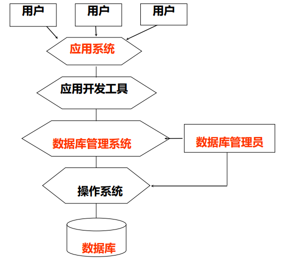

数据
- 定义：数据是数据库中存储的基本对象，描述事物的符号记录称为称为数据。描述事物的符号可以是数字、文字、图像、音频等。
- 特点：数据的表现形式不能完全表达内容；数据与其语义是不可分的。
数据库
- 定义：数据库是长期存储在计算机内、有组织、可共享的大量数据的集合。
- 特点：
- 数据按照一定的数据模型组织、描述和存储
- 为各种用户共享
- 冗余度较小
- 数据独立性较高
- 易扩展
数据库管理系统
- 定义：数据库管理系统是位于用户和操作系统之间的一层数据关系软件。数据库管理系统和操作系统一样是计算机的基础软件，也是一个大型复杂的软件系统。
- 功能：
- 数据定义功能：
- 提供数据定义语言(DDL)
- 定义数据库中的数据对象
- 数据组织、存储和管理：
- 分类组织、存储和管理各种数据
- 确定组织数据的文件结构和存取方式
- 实现数据之间的联系
- 提供多种存取方法提高存取效率
- 数据操纵功能：
- 提供数据操纵语言(DML)
- 实现对数据库的基本操作（查询、修改、插入和删除）
- 数据库的事务管理和运行管理：
- 数据库在建立、运行和维护时由DBMS统一管理和控制
- 保证数据的安全性、完整性、多用户对数据的并发使用
- 发生故障后的系统恢复
- 数据库的建立和维护功能：
- 数据库初始数据装载转换
- 数据库转储，介质故障恢复
- 数据库的重组织
- 性能监控、分析等
- 其他功能：
- DBMS与网络中其他软件系统的通信
- 两个DBMS系统的数据转换
- 异构数据库之间的互访和互操作
- 数据定义功能：
数据库系统
- 定义：数据库系统在计算机系统引入数据库后的系统
- 构成：
- 数据库
- 数据库管理系统（及其开发工具）
- 应用程序，应用系统
- 数据库管理员
- 数据库系统如下图

- 引入数据库后计算机的层次结构如图所示